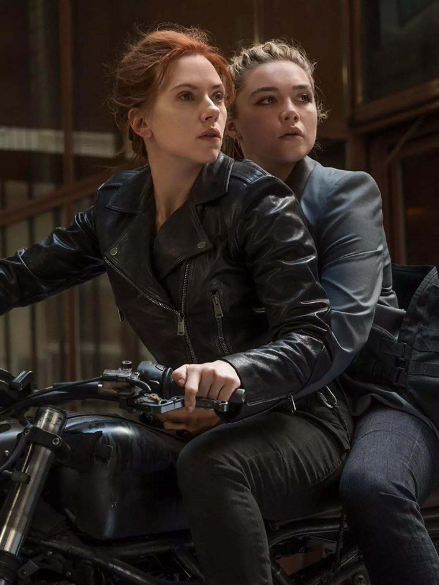

História
Linha do Tempo
1950s: Treinamento na Sala Vermelha
Ainda em criança, Natasha Romanoff foi levada para o Programa da Sala Vermelha, uma instalação secreta da KGB destinada a criar assassinas e espiãs perfeitas. Lá, passou por treinos brutais de combate, espionagem e manipulação psicológica, tornando-se uma das agentes mais letais da União Soviética. O processo apagou quase todas as suas memórias, transformando-a numa arma humana.
2000s: Missões secretas com a S.H.I.E.L.D
Após anos de serviço na KGB, Natasha começou a questionar as suas ordens e o seu passado. Recrutada por Nick Fury e pelo agente Clint Barton (Gavião Arqueiro), desertou e ingressou na S.H.I.E.L.D., onde encontrou uma nova causa. Durante esta fase, participou em inúmeras missões secretas, mostrando-se uma agente indispensável — inteligente, estratégica e impiedosa quando necessário.
2012: Batalha de Nova York
Quando Loki invadiu a Terra com o exército Chitauri, Natasha foi convocada por Nick Fury para integrar a equipa dos Vingadores. Apesar de não ter superpoderes, mostrou enorme coragem e habilidade, lutando lado a lado com heróis como o Capitão América, o Homem de Ferro e o Thor. Foi um dos momentos que marcou a sua transformação definitiva — de espiã nas sombras para heroína mundialmente reconhecida.
2023: Sacrifício em Vormir
Durante a missão para recuperar a Joia da Alma, Natasha e Clint Barton viajaram até ao planeta Vormir. Para obter a joia, era necessário um sacrifício irreversível — e Natasha decidiu entregar a sua própria vida para que os Vingadores pudessem derrotar Thanos e restaurar o universo. O seu ato final de coragem selou o seu legado: a redenção completa de uma mulher que começou como arma e terminou como heroína.
Curiosidades
Primeira aparição

A personagem Viúva Negra surgiu nas bandas desenhadas da Marvel em 1964, na revista Tales of Suspense #52.
Intérprete

Nos filmes do Universo Cinematográfico da Marvel (MCU), é interpretada pela atriz Scarlett Johansson, desde Iron Man 2 (2010).
Filme a solo
O filme Black Widow (2021) explora o seu passado e apresenta a sua “irmã” Yelena Belova, interpretada por Florence Pugh.